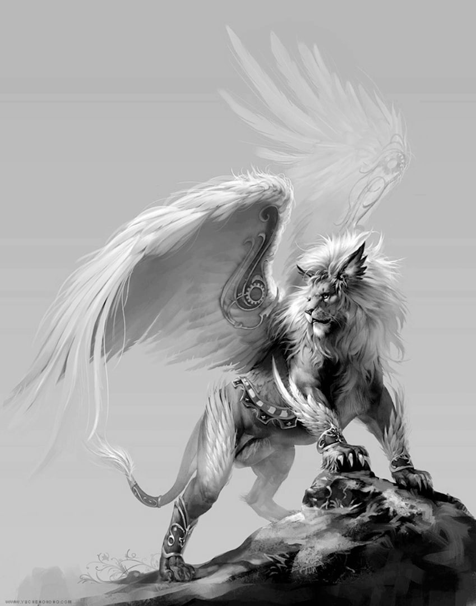
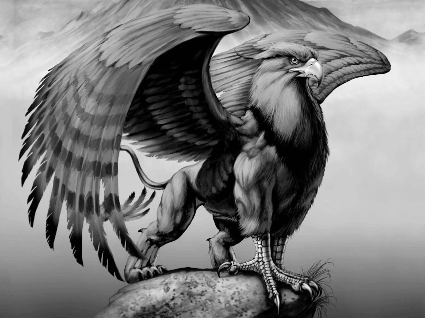
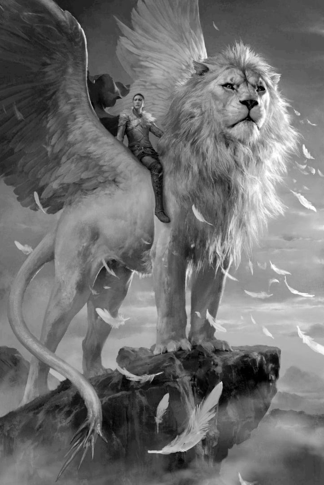

| Главная Новости Галерея Контакты |
|---|

Грифон в Хогвартсе или Хагрид опять за старое...Рубеус Хагрид — преподаватель ухода за магическими существами и лесничий в Школе чародейства и волшебства Хогвартс неоднократно показывал студентам необычных волшебных существ на своих занятиях. Все помнят случай, произошедший несколько лет назад, где Хагрид из-за не соблюдения техники безопасности подверг студентов опасности исходящей от гиппогрифа. Совет попечителей был вынужден ликведировать опасное существо и сделать предупреждение преподавателю. Но Хадрид опять решил удивить всех студентов новым необычным существом - особым подвидом грифона. На удивление в этот раз студенты отнеслись с большей предосторожностью и поэтому всё прошло без инцидентов. Хотя студенты Слизерина утверждали, что лесничий специально выбрал именно крылатого льва, чтобы очередной раз выделить Гриффиндор. На что тот обещал найти особенных существ связанных и с остальными факультетами. Также мы попросили преподавателя ухода за магическими существами составить небольшую сводку о грифонах для этой статьи Грифон является мифическим существом с необычной внешностью. Он имел голову, когти и крылья орла, а тело — льва. Будучи птицей, он легко поднимался в воздух сам, и мог поднять тяжелый груз в своих когтях. Как и у льва, грифон имел 4 лапы, оканчивающиеся большими острыми когтями. Окрас грифон так же имел специфический: задняя половина туловища была черной, а передняя красной, крылья белые. Однако голова, нос и рот пылали огненным цветом. Проживает грифон в местах диких и пустынных. Гнезда грифонов были из чистого золота, а располагались высоко в горах, на неприступных вершинах. Бдительно охраняя его, грифоны набрасывались на людей, если те приближались к нему. Страх перед другими животными грифону неизвестен: наоборот, он смело нападет на любого зверя, кроме льва и слона. Грифон – символичное животное. Он выступает в качестве главы двух сфер: земли – лев и воздуха – птица орел. Сочетая в себе 2 мощнейших животных Солнца, он имеет благоприятный характер: грифон несет в себе силу, бдительность, возмездие. Грифон с полностью львиным телом является является особо редким подвидом грифонов. Они также отличаются окрасом - он абсолютно белый. При взгляде на это животное невольно возникает восхищение, ведь гигантский «котик» состоит из литых мышц, перекатывающихся под бархатной кожей, голову венчает роскошная грива-корона и конечно же мощные крылья. Всем своим видом этот грифон демонстрирует величие, уверенность и спокойствие. Грифона невероятно сложно оседлать. Сделать подобное с грифоном-львом практически нереально. Нужно заслужить его полное доверие и уважение. Существует даже легенда о том, что армия верхом на этих величественных существах способна изменить судьбу всего мира в лучшую или худшую сторону, так как внутри них сокрыта неизведанная но очень сильная магия. Мы даже не представляем, каких усилий стоило Рубеусу Хагриду, чтобы продемонстрировать студентам летающего царя зверей. |